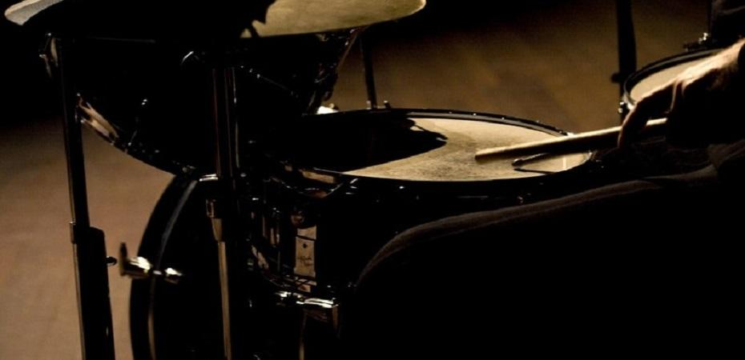

La Bateria
La Bateria
02/12/21
Me hace una persona mas virtuosa
La Bateria es un instrumeto que llevo practicando desde que tengo 11 años me gusta mucho porque es un instrumento que lleva mucha cordinacion y creo que es de unas de las cosas que mas me gusta y por eso me meti y me atrajo mucho la atencion. Yo creo que me empezo a gustar desde que fui a un concierto de un grupo que se llama blue man de ahi me meti a la bateria y no la eh dejado. Lo bueno de la bateria y en general todos los instrumentos es que siempre ay algo nuevo que aprender.
